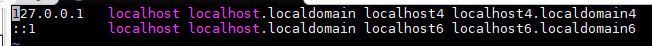
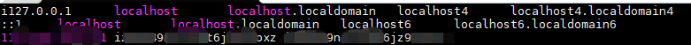
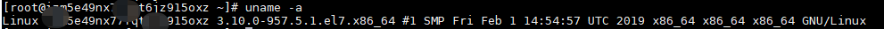

原文连接:https://www.cnblogs.com/HuuuWnnn/p/11833269.html
前端时间做新项目的时候遇到一个dubbo的一个问题，在我们项目搭建好后使用了其他同事的支付服务，支付服务架构的方式使用了dubbo服务的方式，使用zookeeper作为注册中心，我们新项目使用dubbo注解的方式引用dubbo服务，然后项目启动的时候发生了我们最不愿意看到的一件事，项目跑不起来了。查看了一下服务，确认服务没有挂，并且在dubbo的管理工具上也找到了这个服务，回到程序报错去看（测试服务器还在使用，就没还原报错信息），发现了一个没见过的IP，很明显是一个内网IP。支付服务跟注册中心都是在一台服务器，而服务的消费者是我的本机，所以内网IP是不能找到支付服务的。也就是说Zookeeper将Dubbo服务生产者的内网地址给了消费者，如果想使用支付服务将消费者放到同一台服务器上就可以找到了，但是这不是解决问题的根本方法，为什么会出现上面的情况，查看了hosts文件发现，是由于在服务器hosts配置的文件将主机名指向了内网IP地址

如此zookeeper才会将内网IP提供给消费者，我们只需要加一个公网IP即可解决问题

hosts文件修改后就能生效，然后重启zookeeper，重启dubbo服务，然后发现可以找到服务了（这里我马赛克了一下，大家也都能看懂，前面就是公网IP然后空格主机名称然后空格主及名称)
遇到dubbo找不到的问题的时候应该先确认所有提供者与注册中心是否正常，所有配置是不是正确，注册中心地址是不是一样的，检查防火墙是不是关闭，如果在还是没有找到提供者就可以看一下是不是内网IP的原因，这个其实也很好找，只要看控制台的打印就能知道消费者是去那个IP地址找消费者了。文章最后再提一下，有时候hosts修改可能不生效，可以重启一下。
如何查看自己是否修改成功 uname -a

我打码的名字跟你配置的名字一样的时候就成功了，如果不成功重启一下网络就可以了
service network restart 当看到ok就重启成功了